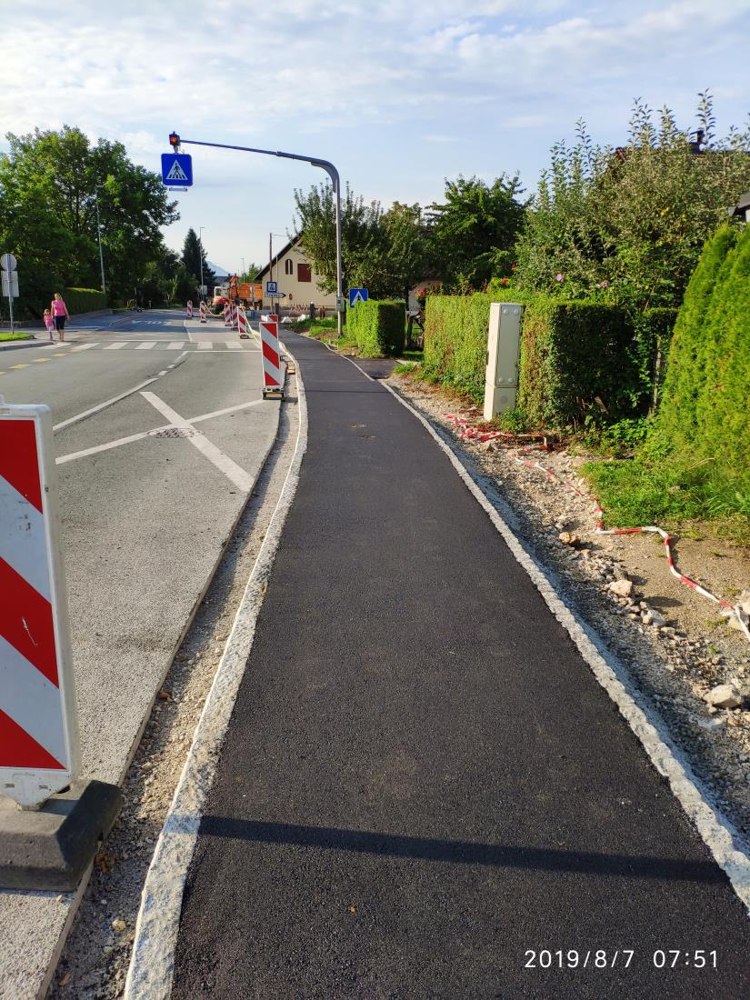

Welcome to Popravilo vodovoda
Vodovodna Popravila, Vodovodni Servis,Vodovodne Inštalacije-Ljublja...
2020.09.07 05:54Prijava Registracija Vrstica za uporabnika Iskanje Glavna vsebina Naslovna stran Objava oglasa Izpostavite svoj oglas na bolha.com - delež od zneska bomo namenili družini v stiski iz Vipave . Oglasnik Ostalo Storitve Gradbene storitve Vodovodne instalacije Oglas Galerija fotografij
Vodovodna Popravila, Vodovodni Servis,Vodovodne Inštalacije-Ljublja...
Cena: po dogovoru Šifra oglasa: 2209940 Objavljen: 27.07.2017 dne 06:51 Do poteka še: do prodaje Število prikazov oglasa: -krat Povečaj Povečaj Podatki o oglasu Lokacija ponudnika storitve: Osrednjeslovenska, LjubljanaVeč:
Vodovodna Popravila, Vodovodni Servis,Vodovodne Inštalacije-Ljubljana, Plami d.o.o. 031/ 636-398
Vodovodar-Hitri Vodovodni Servis-Hitra Vodovodna Popravila Ljubljana-Okolica
"PLAMI" 031/636-398 HIŠNI SERVIS-HIŠNA POPRAVILA-DOMSKA ASISTENCA-LJUBLJANA
V Ljubljani in okolici Podjetje Plami d.o.o., Ljubljana že 20 let, Hitro in Učinkovito, za Vas Opravlja Manjša Hišna Dela oz. Hišni Servis, Nudi Elektro in Vodovodna Popravila oz. Vodovodni Servis, Izvaja Servis, Montažo ter Dobavo Oljnih Gorilnikov, Plinskih Peči ter Termo Regulacij, Svetuje in Izvaja Kompletno Centralno Ogrevanje in Ogrevanje z Toplotnimi Črpalkami ter skrbi za Dobro Klimo vaših Prostorov. Izvajamo pa tudi vsa ostala Hišna Dela po dogovoru.
DELOVNI ČAS:
Delavniki, Sobota, Nedelja, Prazniki - NON STOP !
Klicna Številka in spletni naslov za Hitri Hišni Servis oz. Popravilo:
031/63 63 98
http://www.plami.si
Izvajamo tudi Domsko Asistenco Zavarovalnic Triglav, Generali, Maribor, Adriatic Slovenica, Coris, Tilia, Wiener Städtische, Ergo
POKLIČITE NAS ZA POJASNILO!
Znamke toplotne tehnike in klimatskih naprav, ki jih popravljamo in tržimo:
NEHS,JOANES,INTERCAL,HANSA,API,LIBELA,BALTUR,EUROTHERM,GORENC,KIV,VALHER,
LAMBORGINI,ECOFLAM,KLOCKNER,CTC,RIELLO,ELCO,CALDERA,HERZ,UNICAL,LOKATERM,
IDEALCLIMA,STARKLIMA,FER,BENTONE,WEISHAUPT,IMMERGAS,OPTIMA,VIADRUS,ŠTADLERBUDERUS,JUNKERS,FEROLLI,OLYMP,FEROTERM,LIKO,JUNIOR,STADLER,HERA,MAESTRAL,
VISSMAN,VIADRUS,EUROLINE,LENCO,THYSSEN,LIV,LENTHERM,SCHMITT,ITPP,SIME, TOPLING,MAN,DANFOSS,BONECO,SANYO,EMMETI,PANASONIC,BOSCH,CENTROMETAL,FISMAR,STROJ,TOSHIBA,FAIR,AMCOR,ORIEME,MITSUI,GORENJE,TIKI,ARISTON,OBI,ROYAL, SELTRON,FIRŠT
PLAMI d.o.o.
Kriva pot 25a
1000 Ljubljana
Tel.: 031/636-398
Fax: 01/8313-842
info@plami.si
http://www.plami.si
Hitra Manjša Hišna Popravila oz. Servis, ki Vam jih nudimo:
STORITVE-HITRA ELEKTRO POPRAVILA:
* Popravilo Vtičnice, Vtičnic
* Servis Vtičnice, Vtičnic
* Nabava Vtičnice, Vtičnic
* Montaža Vtičnice, Vtičnic
* Zamenjava, Menjava Vtičnice, Vtičnic
* Svetovanje pri Nabavi Vtičnice ali Kompletni Zamenjavi Vtičnic v Hiši ali Stanovanju
* Popravilo Stikala, Stikal
* Servis Stikala, Stikal
* Nabava Stikala, Stikal
* Montaža Stikala, Stikal
* Zamenjava, Menjava Stikala, Stikal
* Svetovanje pri Nabavi Stikala ali Kompletni Zamenjavi Stokal v Hiši ali Stanovanju
* Zamenjava in Dobava Žarnic -(tudi Z Varčnimi Žarnicami)
* Dobava in Montaža Časovnikov za vaše Električne Aparate
(s tem lahko razdelite kdaj el. aparat deluje in kdaj ne)
* Dobava in Montaža Wat-metrov na vaše Elektro Porabnike
(z njimi lahko odkrijete potratne aparate in izračunate porabo el. energije na: d/t/m/l)
* Dobava in Zamenjava Varovalk
* Montaža in Popravilo Svetil
* Dobava, Montaža, Popravilo in Zamenjava Hišnih Zvoncev
* Popravila, Čiščenje in Dobava Ventilatorjev
* Popravila in čiščenje Odzračevalnikov
* Priklop in Odklop Gospodinjskih Aparatov
* Dobava in Popravilo Električnih Radiatorjev
* Dobava in Zamenjava Kablov
* Izvajamo tudi Manjše Elektro Inštalacije
STORITVE-HITRA VODOVODNA POPRAVILA:
* Dobava Vodovodne Pipe, Zamenjava Vodovodne Pipe, Popravilo Vodovodne Pipe in Montaža Kuhinjske Vodovodne Pipe
* Dobava Vodovodne Pipe, Zamenjava Vodovodne Pipe, Popravilo Vodovodne Pipe in Montaža Vodovodne Pipe v Umivalniku
* Dobava Vodovodne Pipe, Zamenjava Vodovodne Pipe, Popravilo Vodovodne Pipe in montaža Vodovodne Pipe v Kopalniški Kadi
* Dobava Vodovodne Pipe, Zamenjava Vodovodne Pipe, Popravilo Vodovodne Pipe in montaža Vodovodne Pipe v Bideju
* Dobava, Zamenjava, Popravilo in montaža Tuša v Kopalnici
* Montaža Vseh Drugih Vrst Vodovodnih Pip
* Izdelava odprtine v Kuhinjskem Koritu za Pritrditev Vodovodne Pipe
* Zamenjava Tesnil na Ventilih in Vodovodnih Pipah
* Dobava, Zamenjava ali Montaža Mrežic oz.Filtrov na Vodovodne Pipe
* Dobava, Popravilo in Zamenjava oz. Montaža Novega WC Kotlička, Splakovalnika
* Dobava, Zamenjava ali Montaža Kotnih Ventilov in Pletenih, Prepogibnih Cevi
* Dobava, Menjava, Popravilo ali Montaža Električnega Bojlerja
* Čiščenje in Odmašitev Zamašenih Kuhinjskih in Kopalniških Odtokov
* Čiščenje in Odmaševanje Kanalizacije
Razlogi zakaj Puščajo Vodovodne Pipe in kdaj je Vodovodne Pipe potrebno Popraviti ali Zamenjati.
* Vodovodna Popravila oz. Razna druga Popravila Vodovoda
ČE KAPLJA VODOVODNA PIPA......
Vodovodna pipa je ventil, ki uravnava dotok vode. Med tem, ko vrtimo ročaj pipe, rahljamo vgrajeno tesnilo ali pa ga pritiskamo na odprtino za dotok vode. Če kljub privitemu ročaju iz pipe še zmeraj kaplja ali curlja, je tesnilo po vsej verjetnosti poškodovano. To je pogost pojav pri starejših pipah, saj se tesnilo pipe s časoma obrabi in pretrga. Naš strokovnjak vam bo z veseljem zamenjal tesnilo na vaši pipi.
Preden se lotimo zamenjave tesnila na pipi, moramo zapreti dotočni ventil pipe. Le ta je po vsej verjetnosti nameščen pod umivalnikom ali v bližini pipe. Če tega ventila v kopalnici nimate, bo treba zapreti glavni ventil vodovodne napeljave. Ko to storimo, pipo odpremo in počakamo, da voda preneha teči.
Zaščitno kapo, ki pokriva ventil, ovijemo s staro krpo ali kosem starega usnja, da pri montaži ne bomo poškodovali površine armature. Nato z ustreznimi kleščami odvijemo zaščitno kapo pipe. Z viličastim ključem ustrezne velikosti odvijemo še ventil in ga izvlečemo iz ohišja pipe. Na spodnjem delu ventila pipe je tesnilo, ki je na ventil privito z vijakom in matico. Z enim ključem ali cevnimi kleščami primemo ventil pipe, z drugim pa odvijemo matico. Paziti moramo, da ne poškodujemo navojev na ventilu pipe ali same matice. Poškodovano tesnilo odstranimo z ventila pipe in očistimo podlago, na katero bomo namestili novo tesnilo. Na ventil pipe namestimo novo tesnilo in privijemo matico. Preverimo, če se novo tesnilo dobro prilega. Ventil privijemo nazaj v ohišje pipe in ga zategnemo s ključem. Prav tako namestimo nazaj zaščitno kapo na pipi, ki jo pri privijanju s kleščami zopet zaščitimo s kleščami, da ne bi poškodovali kovine.
Na koncu odpremo le še dotočni ventil pipe, ki smo ga na začetku zaprli.
Uporabo vodovodne pipe boste podaljšali spet za nekaj let.
Vir: SLONEP
Razlogi zakaj Puščajo Vodovodne Pipe in kdaj je Vodovodne Pipe potrebno Popraviti ali Zamenjati.
Veliko težavo pri Puščanju Vodovodne Pipe nam povzroča vodni kamen, kateri povzroči, da postanjo Vodovodne Pipe trde, Ventili na Pipah pa se zaradi tega ne dajo premikati.
So tudi drugi razlogi : Najpogostejši in najbolj običajen razlog je, da so Pipe razrahljane. Da bi razumeli zgornjo trditev si najprej oglejmo, kako so Vodovodne Pipe zgrajene. Vodovodne Pipe se sestojijo iz obilice sestavnih delov. Vsi skupaj so zloženi v Ogrodje Pipe, ki jih drži skupaj. Na spodnjem delu ogrodja je vhodna odprtina, kjer voda priteka v Vodovodne Pipe. Če si predstavljamo, kako potuje voda po Vodovodnih ceveh, bomo po krajšem popotovanju prispeli do Ventila Pipe. Le-tega lahko odpiramo in zapiramo s premikanjem ročice Pipe, ki je preko posebnega mehanizma Pipe povezana z njim. Naloga Ventila Pipe je, da lahko vodi po potrebi odpira ali zapira pot skozi samega sebe proti ustju Pipe. Na tem mestu naletimo na prvo kritično točko, kjer se lahko nahaja razlog za Puščanje Pipe. Če je Ventil Pipe slab, vode ne bo zadržal niti v primeru, ko je zaprt in le-ta bo nekontrolirano odtekala skozi odprtino Pipe.
Pokvarjen Ventil je lahko eden izmed razlogov za Puščanje Pipe, vendar še zdaleč ni edini. Pojavlja se tudi mnogo drugih razlogov, nekateri izmed njih že dosti prej v procesu potovanja vode skozi Pipo. Drugi izmed takih razlogov je slabo privita matica, ki povezuje Vodovodno Pipo z Vodovodno Cevjo. Seveda je potrebno tako matico na Pipi najti in jo priviti.
Če je vzrok puščanja Vodovodne Pipe slabo tesnilo, priporočam, da se ga zamenja z novim. V redkih primerih Pipe Puščajo tudi zato, ker so odlomljene. Rešitev je v tem primeru v Zamenjavi stare, zlomljene Pipe z novo Pipo, ki jo lahko kupite pri nas. S stranko se posvetujemo kakšno Pipo si želi. Ponujamo najrazličnejše Pipe: Pipe za Kuhinje, Pipe za Kopalnice, Vrtne Pipe in razne druge Pipe. Pri tem vam lahko izberete Pipe z dolgim vratom, Pipe z kratkim vratom, Pipe za splakovanje, Pipe z razpršilnim nastavkom, Enoročne Pipe, Dvoročne Pipe, Pipe za montažo na zid, Pipe za Montažo na Umivalnik, Pipe z Keramičnimi Ventili, Pipe za Splakovanje WC Školjke... Pipe bomo z veseljem dostavili in zamenjali.
Vodovodna Pipa, ki ne tesni in iz nje nenehno kaplja voda, je v Kuhinji ali Kopalnici pogosta težava, ki pa vam jo lahko odpravi naše podjetje Plami d.o.o. Tako prihranite stroške za vodo, ki jo po nepotrebnem izgubljate zaradi puščanja Vodovodne Pipe, kapljanje vode iz Pipe pa vas nenehno spravlja ob živce.
Običajne Vodovodne Pipe
Pred popravilom Vodovodne Pipe najprej zapremo dovod vode na glavnem dotoku ali pri servisnem ventilu Vodovodne Pipe. S čepom zapremo lijak, da majhni sestavni deli Vodovodne Pipe ne bi padli v odtok. Odstranimo zgornji del Vodovodne Pipe, tako da povlečemo ali odstranimo glavni pokrov ročaja Pipe in odvijemo majhen podporni vijak ročaja Vodovodne Pipe. Ovijemo krpo iz blaga okrog Vodovodne Pipe in jo na mestu trdno držimo z nastavljivim izvijačem. S še enim izvijačem odvimo veliko medeninasto matico, ki sicer drži ročaj Vodovodne Pipe. Zamenjamo tesnilo ventila Vodovodne Pipe. Ponovno namestimo vrh Vodovodne Pipe in odpremo dovod vode ter preverimo, če Pipa dobro tesni.
Če iz Vodovodne Pipe še kaplja, je morda obrabljeno mesto pod tesnilom, ki je lahko prekrito z vodnim kamnom ali opraskano. Težavo odpravimo s posebnim orodjem za nastavljanje sedeža Vodovodne Pipe. Potisnemo primeren konec orodja v Vodovodno Pipo in ga obračamo, da očistimo kovinski sedež Vodovodne Pipe.
Vodovodne Pipe s keramičnimi diski
Če so vaše Vodovodne Pipe novejše in morate ročaj Pipe zavrteti le za četrtino, da jih odprete, potem so v njih namesto tesnil že keramični diski. Težavo s kapljajočo Vodovodno Pipo rešimo tako, da odstranimo vrhnji del Vodovodne Pipe in odvijemo medeninast ventil, da pridemo do keramičnega elementa. Zamenjamo cel keramični element Vodovodne Pipe, včasih pa je potrebno zamenjati tudi tanko tesnilo iz gume okoli keramičnega elementa Vodovodne Pipe.
Pokličite nas, se dogovorite za termin in z veseljem Vam bo naš Vodovodar zamenjal Ventil Vodovodne Pipe ali pa dobavil novo Pipo, v kolikor se stare Vodovodne Pipe ne bo dalo popraviti. Nudimo bogat izbor Vodovodnih pip različnih cenovnih razredov in oblik.
Pravi naslov za dobavo in zamenjavo Vodovodne Pipe, Plami d.o.o. Ljubljana, Pokličite 031 63 63 98.
NUDIMO ŠE:
Nabava in Montaža Pipe za Kopalnico, Nabava in Montaža Kotnih Ventilov v Kopalnici, Nabava in Zamenjava Tuša pri Kadi, Menjava Pipe Ljubljana, Nabava Pipe Ljubljana in Montaža Pipe Ljubljana, Popravilo Bojlerja Ljubljana, Menjava Glavnega Ventila v Stanovanju Ljubljana, Menjava Kotnega Ventila Ljubljana, Zamenjava Ventila Ljubljana, Vodovodna Popravila oz. Razna druga Popravila Vodovoda, Zamenjava Pletenih Cevi Ljubljana, Popravilo Pipe Ljubljana, Zamenjava Tesnil v Kopalnici, Hitra Zamenjava WC Kotličkov, Zamenjava Kotlička Ljubljana, Hitro Popravilo WC Kotlička Ljubljana, Montaža Novega WC Kotlička Ljubljana, Popravilo Pipe, Zamenjava Ventila, Popravilo WC Kotlička Ljubljana, Menjava Dovodne Cevi WC Kotlička, Zamenjava Tesnila WC Kotlička, Nabava in Montaža WC Kotlička, Zamenjava Pipe Ljubljana, Servis Keramičnega WC Kotlička Ljubljana, Popravilo Kotličkov Ljubljana, Zamenjava Umivalnika Ljubljana, Zamenjava Pipe Ljubljana, Nabava in Zamenjava Pipe za Umivalnik Ljubljana, Montaža Pipe na Umivalniku Ljubljana, Menjava Sifona Umivalnika, Zamenjava Sifona, Popravilo Sifona Kuhinjskega Pomivalnega Korita, Vodovodna Popravila Ljubljana, Vodovodar Ljubljana, Vodovodar v Ljubljani, Dežurni Vodovodar v Ljubljani, Dežurni Vodovodar Ljubljana, Popravilo Pipe Ljubljana, Popravilo Bojlerjev, Popravilo Bojlerja v Kopalnici, Popravilo Bojlerja v Kuhinji, Zamenjava Pletenih Cevi Bojlerja v Kuhinji in Kopalnici, Servis in Čiščenje Bojlerjev Ljubljana, Popravilo ali Zamenjava Grelnika Bojlerja Ljubljana, Popravilo Pipe Ljubljana, Vodovodna Popravila oz. Razna druga Popravila Vodovoda, Priklop Bojlerja v Kuhinji Ljubljana in Priklop Bojlerja v Kopalnici Ljubljana, Popravilo Pipe v Kopalnici Ljubljana, Montaža Pipe in WC Kotlička, Popravilo Bojlerja Ljubljana, Popravilo Bojlerja Gorenje Ljubljana, Popravilo Električnega Bojlerja Gorenje Ljubljana, Servis Bojlerja Gorenje Ljubljana, Popravilo Bojlerja Ariston Ljubljana, Servis Bojlerja Ariston Ljubljana, Popravilo WC Kotlička, Montaža WC Kotličkov in Dovodnih cevi, Zamenjava Pipe Ljubljana, Servis Pipe Ljubljana, Menjava Pipe Ljubljana, Popravilo Straniščnega Splakovalnika, Popravilo Straniščnega Splakovalnika, Zamenjava Posameznih Delov Pipe in WC Kotlička, Nabava in Montaža Nove Pipe za Kuhinjo in Kopalnico, Zamenjava Pipe Ljubljana, Menjava Ventila Pipe, Popravilo Ventila Pipe, Nabava in Zamenjava Pipe za Kuhinjo, Popravilo Pipe Ljubljana, Popravilo Kuhinjske Pipe, Popravilo Vrtne Pipe ali Zamenjava Vrtne Pipe, Montaža Pipe v Kuhinji Ljubljana, Popravilo Kopalniške Pipe Ljubljana, Popravilo Pipe v Kopalnici Ljubljana, Montaža Sifona Pomivalnega Korita Ljubljana, Zamenjava Straniščne Školjke Ljubljana, Odmašitev WC Školjke Ljubljana, Odmašitev Odtoka Ljubljana, Odmašitev Odtoka Pomivalnega Korita Ljubljana, Čiščenje Odtoka Ljubljana, Čiščenje Odtokov Ljubljana, Odmašitev Odtoka v Kopalnici Ljubljana, Odmašitev Odtokov Ljubljana, Odmašitev WC Školjke Ljubljana, Odmašitev Straniščne Školjke Ljubljana, Odmaševanje Odtoka v Kuhinji Ljubljana, Odmaševanje Odtoka v Kopalnici Ljubljana, Odmaševanje Kanalizacije Ljubljana, Čičšenje Kanalizacije Ljubljana, Čiščenje Zamašenih Odtokov Ljubljana, Čiščenje Zamašenega Odtoka Ljubljana, Odmašitev Zamašenih Odtokov Ljubljana, Dežurna Služba Za Odmašitev Odtokov Ljubljana, Dežurni za Čiščenje Odtokov v Ljubljeni, Non Stop Vodovodna Popravila Ljubljana, Vodovodna Popravila oz. Razna druga Popravila Vodovoda, Odmašitev Sifona Ljubljana, Menjava Kuhinjskega Pulta, Popravila 24 ur Ljubljana, Hitra Hišna Popravila, Odmašitev Kuhinjskega Korita, Nabava in Zamenjava Omaric v Kopalnici, Vodovodna Popravila, Vodovodni servis, Vodovodne inštalacije, Vodovodne Storitve, Vodovodar-Ljubljana...
STORITVE-HITRA POPRAVILA OGREVANJA:
* Servis, Čiščenje, Montaža in Dobava Oljnih Gorilnikov za Centralno Ogrevanje
* Servis, Čiščenje, Montaža in Dobava Plinskih Peči in Gorilnikov za Centralno Kurjavo
* Popravilo in Dobava Toplotne Regulacije
* Popravilo in Dobava Sobnega Termostata
* Dobava in Zamenjava Varnostnih Ventilov,Regulacijskih in Varnostnih Termostatov
* Dobava in Zamenjava Raznih Stikal
* Razna Druga Popravila na Centralni Kurjavi
* Nudimo Vam kompletno Izvedbo Ogrevanja vaših Prostorov od Ogleda,Svetovanja do Izvedbe Centralnega Ogrevanja ali Ogrevanja s Toplotno Črpalko "Zrak-Zrak","Zrak-Voda" in drugo
STORITVE-HITRA POPRAVILA KLIMATSKIH NAPRAV:
* Popravilo Iztoka Kondenza iz Klime
* Popravilo,Čiščenje, Montaža in Dobava Klimatskih Naprav oz. Toplotnih Črpalk
* Dobava in Montaža: Čistilci Zraka-Ionizatorji,Vlažilci Zraka,Sušilci Zraka
STORITVE-DRUGA HITRA POPRAVILA:
* Popravila in Dobava Vrat, Kljuk in Ključavnic
* Dobava in Montaža Ogledala v Kopalnici
* Menjava Filtrov
* Ostalo po Dogovoru
V SKLOPU HIŠNIH OPRAVIL, VAM PLAMI d.o.o. LJUBLJANA NUDI TUDI MANJŠA GRADBENA DELA KOT SO:
* Zidanje Manjših Prizidkov
* Podiranje Prizidkov
* Stenska Ometavanja in Odstranjevanje Ometa
* Polaganje in Odstranjevanje Talnih Oblog
* Polaganje in Odstranjevanje Stenskih Oblog
* Manjša Betoniranja
* Prestavitev Oken in Vrat
* Montaža Okenskih Polic
* Razbijanje Betona
* Polaganje in Odstranjevanje Keramike
* Popravilo Teras in Ograj ter ostala podobna Gradbena Dela
ZA POMOČ LAHKO NAŠEGA SERVISERJA-VODOVODARJA, ELEKTRIČARJA POKLIČETE ZA VSAKO VAŠE POPRAVILO!
PO VAŠEM KLICU BO NAŠ SERVISER-VODOVODAR, ELEKTRIČAR, KAR NAJHITREJE PRI VAS.
POTRUDILI SE BOMO, DA BO NAŠ SERVISER-VODOVODAR, ELEKTRIČAR, POISKAL PRAVO REŠITEV ZA VAS!
Izvajamo tudi Domsko Asistenco Zavarovalnic Triglav, Generali, Maribor, Adriatic Slovenica, Coris, Tilia, Wiener Städtische, Ergo
POKLIČITE NAS ZA POJASNILO!
DELOVNI ČAS:
Delavniki, Sobota, Nedelja, Prazniki - NON STOP !
Klicna Številka in spletni naslov za Hitri Hišni Servis oz. Popravilo:
031/63 63 98
http://www.plami.si
Znamke toplotne tehnike in klimatskih naprav, ki jih popravljamo in tržimo v okviru naših storitev:
NEHS,JOANES,INTERCAL,HANSA,API,LIBELA,BALTUR,EUROTHERM,GORENC,KIV,VALHER,
LAMBORGINI,ECOFLAM,KLOCKNER,CTC,RIELLO,ELCO,CALDERA,HERZ,UNICAL,LOKATERM,
IDEALCLIMA,STARKLIMA,FER,BENTONE,WEISHAUPT,IMMERGAS,OPTIMA,VIADRUS,ŠTADLER
BUDERUS,JUNKERS,FEROLLI,OLYMP,FEROTERM,LIKO,JUNIOR,STADLER,HERA,MAESTRAL,
VISSMAN,VIADRUS,EUROLINE,LENCO,THYSSEN,LIV,LENTHERM,SCHMITT,ITPP,SIME, TOPLING,MAN,DANFOSS,BONECO,SANYO,EMMETI,PANASONIC,BOSCH,CENTROMETAL,FISMAR,STROJ,TOSHIBA,FAIR,AMCOR,ORIEME,MITSUI,GORENJE,TIKI,ARISTON,OBI,ROYAL,SELTRON,FIRŠT
Najpogostejši kraji v katerih nudimo naše storitve:
Ljubljana, Domžale, Trzin, Mengeš, Kamnik, Kranj, Škofja Loka, Vrhnika, Logatec, Moravče, Dragomelj, Dobeno, Dolsko, Dol pri Ljubljani, Ihan, Dob, Količevo, Loka pri Mengšu, Komenda, Cerklje na Gorenjskem, Vodice, Lukovica, Krtina, Blagovica, Brnik, Moste pri Komendi, Spodnje Pirniče, Zgornje Pirniče, Pirniče, Gameljne, Horjul, Brezovica pri Ljubljani, Medvode, Zbilje, Podgorje, Križ, Stranje , Vrhpolje, Godič, Stahovica, Sadinja vas, Lipoglav, Podlipoglav, Ljubljana, Sostro, Sora, Mekinje, Grosuplje, Polica, Brinje, Beričevo, Šenčur, Litija, Naklo, Borovnica, Golnik, Ivančna Gorica, Muljava, Višnja Gora, Trebnje, Šmartno pri Litiji, Velike Lašče, Male Lašče, Šentpavel, Javor, Dobrova, Črna Vas, Orle, Malo Trebeljevo, Ljubljana, Trebeljevo, Ljubljana, Podsmreka, Sinje Gorica, Jevnica, Kresnice, Senožeti, Kresniške Poljane, Vir, Podreča, Trboje, Jezero, Mali Vrh pri Šmarju, Šmarje-Sap, Smrjene, Golo, Škrilje, Visoko, Breg pri Borovnici, Dol pri Borivnici, Blatna Brezovica, Brezovica pri Borovnici, Ljubljana, Preserje, Ljubljana, Zapotok, Jarše…..
Opozorilo!
Za vsako našo storitev, popravilo, servis oz. strokovni pregled, se zaračuna najmanj 1 delovna ura, čas na poti in potni stroški po našem ceniku oz. po dogovoru s stranko! Za odmašene odtoke se reklamacija ne priznava!
Hvala za razumevanje!
PLAMI d.o.o.
Kriva pot 25a
1000 Ljubljana
Tel.: 031/636-398
Fax: 01/8313-842
info@plami.si
http://www.plami.si
Z ODLIČNIM POZDRAVOM! Plami d.o.o. Ljubljana, dir. Bogdan Zupančič
Stik
PLAMI d.o.o. Obiščite to trgovino na bolha.com Naslov Kriva pot 25a Mesto in poštna številka 1000 Ljubljana Regija Osrednjeslovenska Slovenija Telefonska številka: +386 1 831 38 42 (Bogdan Zupančič) Telefonska številka: +386 31 636 398 Stopi v stik z oglaševalcem Naslednja Naslednja Prejšnja Prejšnja Prijavi oglas Shrani oglas Natisni oglas Pošlji prijatelju Nazaj na seznam oglasovPodpora uporabnikom
Telefon: 01 420 16 40 Delovni čas: od ponedeljka do sobote od 8h do 19h Email: podpora@bolha.comVarnost na bolha.com
Nasveti za varen nakup Pogosta vprašanja Družite se z bolha.com: Facebook Instagram TikTok YouTube Skupnost bolha.com Stik in pomoč O nas Oglaševanje Pravila in pogoji uporabe Politika zasebnosti Nastavitve piškotkov Načini plačila Zemljevid strani Objavite oglas© 2002 - 2020 Styria digital marketplaces d.o.o. Vse pravice pridržane
